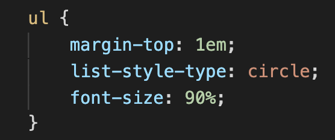

Тег <ul> устанавливает маркированный список. Каждый элемент списка должен начинаться с тега <li>. Если к тегу <ul> применяется таблица стилей, то элементы <li> наследуют эти свойства.
Синтаксис
<ul>
<li>элемент маркированного списка</li>
</ul>
Атрибуты
type
Устанавливает вид маркера списка.